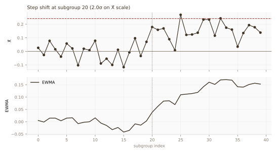
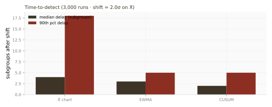

Case studies · 08 · Shift detection40 subgroups · n = 5 · 3,000 runs · simulated
Which chart catches the shift first?
Study 02 showed why an overall-σ gate flags drift the within gate missed.
This companion asks the next operational question: once a real step change hits, how many subgroups
pass before each chart type fires? Same synthetic process, three standard chart families, one
reproducible latency table.
Monte Carlo with fixed seed. In-control Gaussian subgroups (σ = 0.18), then a +2σ step on the
X̄ scale at subgroup 20. No production data.
VerdictOn a 2σ X̄-scale step shift,
CUSUM alarms first (median 2 subgroups after the shift; 90th percentile 5),
EWMA is close behind (median 3), and the plain 3σ X̄ chart is slowest
(median 4, 90th 18). False-alarm rates over 40 in-control subgroups stay in the
6–11% band across all three.
In plain terms: if the plant's question is
"how fast do we see drift?", the chart choice matters as much as the capability index — and
memory-based charts (EWMA, CUSUM) pay for their extra arithmetic with earlier detection.
The setup
Latency is measured from the first in-control subgroup after the
step. A run that never alarms within the remaining window is censored at 20 subgroups.
Each simulation draws 40 subgroup means (n = 5 per subgroup). Subgroups 0–19 are in control at
μ = 0; from subgroup 20 onward the mean steps up by 2σX̄. Three detectors run on the
same draw:
CUSUM — two-sided, k = 0.5, h = 4.77 (ARL₀ ≈ 370 subgroups)

Fig. 1. One simulated run. Top: X̄ with 3σ limit (dashed). Bottom: EWMA trace.
Vertical line marks the step at subgroup 20.
Latency and false alarms
3,000 Monte Carlo replicates. "Detected" is the fraction that alarm within the 20 subgroups
after the step; "false alarm" is the fraction that alarm on a 40-subgroup all-in-control run.
Chart
Median delay
90th pct delay
Detected
False alarm
X̄ (3σ)
4 subgroups
18
91.1%
10.5%
EWMA (λ = 0.2)
3
5
97.5%
5.9%
CUSUM (k = 0.5)
2
5
96.1%
8.7%

Fig. 2. Time-to-detect distribution summary across 3,000 runs. CUSUM and EWMA
dominate on median delay; X̄'s 90th percentile tail is much longer.
What this pairs with Study 02
Study 02 argued the gate should use overall σ so drift is not hidden. Study 08 argues
the alarm should use a chart tuned for the drift you expect: if between-subgroup walks are
the failure mode, memory charts detect them one to two subgroups sooner than a naked X̄ limit —
at similar false-alarm cost on this calibration.
Production SPC still layers Western Electric rules, autocorrelation checks (Study 02 Fig. 4),
and multiplicity control (Study 06). This study isolates one variable — chart family — so the
trade-off is visible.
Limitations
One shift size and direction. A small 0.5σ creep favours CUSUM more; a massive 4σ jump
makes all three look instant.
Independent subgroups. Autocorrelation within subgroups (Study 02) would change both
limits and latency; not modelled here.
Gaussian. Heavy tails widen X̄ limits and slow detection; the ranking usually holds but
the gaps shrink.